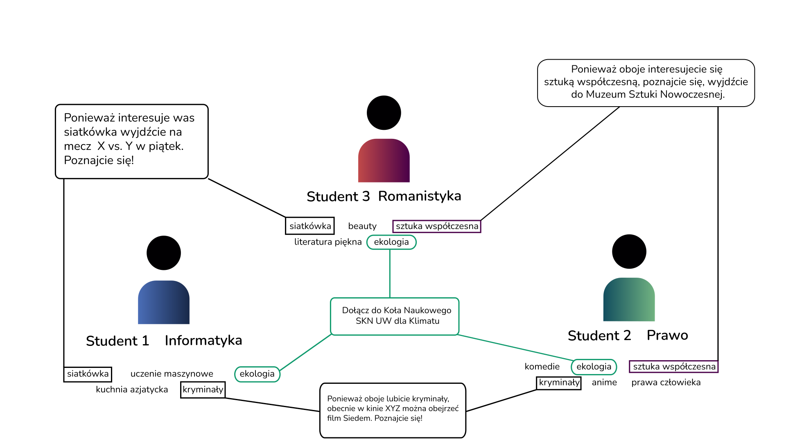

Cel projektu #
Celem projektu jest stworzenie aplikacji z systemem rekomendacyjnym, która ułatwi studentom nawiązywanie relacji łącząc ich poprzez wspólne zainteresowania i zachęcając do aktywności offline. Aplikacja ma za zadanie połączyć ludzi w realnym świecie, wspierając jednocześnie lokalne firmy i tworząc społeczność. 